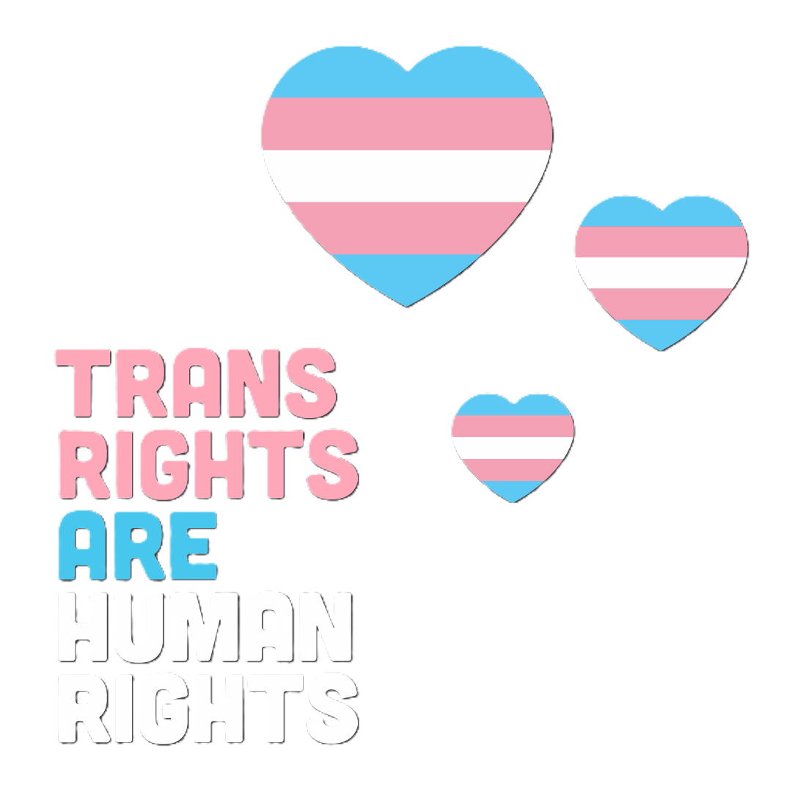

Pour conclure je dirais que les personnes trans sont des personnes comme les autres mais qui
plus que les autres ont besoin de soutiens et certainement pas de personnes lui disant qu'elle n'est
pas 'valide'. Même si vous ne partagez pas mon point de vue ne faites pas de généralisation sur les
personnes trans car chaque personne est unique et il n'y a pas de personnes normales.
Si un jour, quelqu'un vous dit qu'iel est trans, acceptez la et accompagnez la
car avoir le courage de parler de ça à quelqu'un est toute une épreuve qui est loin d'être facile.
Je souhaite à toute personne trans lisant cela, une excellente continuation dans cette
vie semée d'embuches ainsi que tout mon soutien. Ne laissez jamais tomber, je vous aime ♥.
